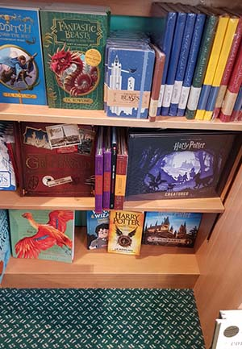

Wil je meer te weten komen over ons of heb je gewoon een vraag? Doe het dan met onderstaande formulier.
Over mij
Deze webapp is tot stand gekomen door een Harry Potter fan. Ik ben een studente van de opleiding CMD aan de HvA. Mocht je met mij in contact willen komen, kan dat via bovenstaande formulier.
Bovenstaande foto had ik in Waterstones genomen, mijn favoriete boekenwinkel na Scheltema. Waterstones heeft een hoek speciaal voor alle Harry Potter boeken en spullen gemaakt. Als ik in Waterstones ben bezoek ik deze hoek altijd. :)
Mocht je een keer in Amsterdam zijn, raad ik je aan om zowel Waterstones als Scheltema te bezoeken.